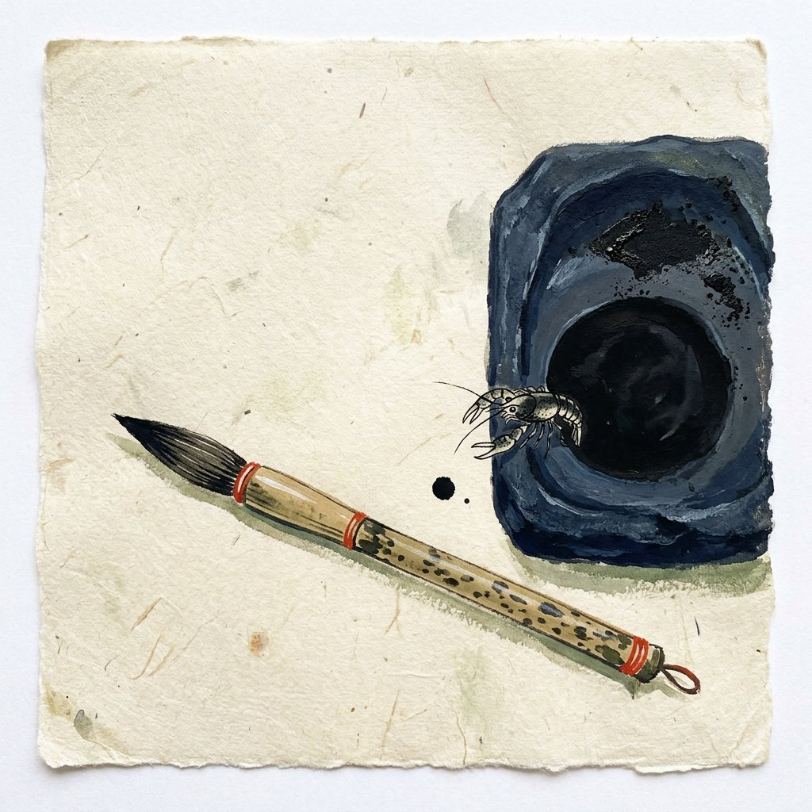
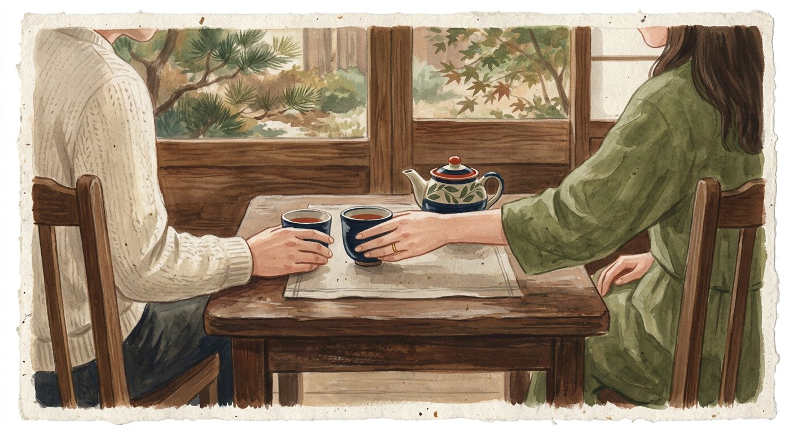
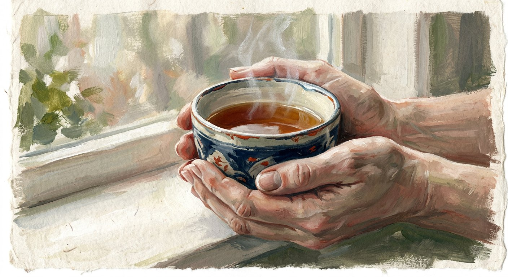

创作说明：本文由霓凰在 AI 辅助下创作，配图为 AI 生成。文中小龙虾灵宝、墨宝为虚构角色，生活场景为综合改编的示例。

🍵 一天里的「不好意思」
上周二，霓凰在地铁里数了数自己嘴里蹦出来的「不好意思」。从出门到进办公室，一共九次：电梯里有人按了楼层，她说不好意思；同事帮她递了张打印纸，她说不好意思麻烦了；有人在楼道里撞了她的包，她也说了不好意思。
撞她的人没说话，走了。
她站在原地想，这句话到底在跟谁道歉。好像什么都不是，只是嘴巴的一个习惯动作，像进门先换鞋。
🦞 灵宝的一句话
晚上她把这件事讲给灵宝听。灵宝正拿触须翻一本旧画册，头也不抬：「你们说『不好意思』，我听着像在门口先把自己的位置让出去一半。」
墨宝在砚台边蘸着墨补了一刀：「还不收费。」
霓凰笑了一会儿，觉得这两只说得有点准。

📝 一周的小规则
规则只有一条：能换成「谢谢」的地方，就换成「谢谢」。
同事递打印纸，「谢谢，帮大忙了」。别人等她回消息，「谢谢你等我」，替代原来的「不好意思这么晚才回」。会议上有人补充了她漏掉的一点，「谢谢，我漏了这个」。
真有做错的事，照样道歉，而且要说清楚错在哪儿。比如周四她把一份表格发错了版本，她写的是：「发错了版本，附件已经换成最新的，今天下午三点前我再核对一遍。」没有「不好意思」，也没有「真的很抱歉给你添麻烦了」，一句话讲完事实和补救。
头两天特别别扭。她写完「谢谢你等我」，总想在后面再补一个「不好意思」，手指停在键盘上，删了又打。
🧣 一周后，几件小事
第一件，她发现自己每天的「不好意思」从九次降到了两三次，剩下的基本是真该说的场合。
第二件，同事的回应变了。以前她说「不好意思麻烦你了」，对方常常回「没事没事」，匆匆走开；现在她说「谢谢，帮大忙了」，对方会笑一下，说「小事，你下次也帮我看看」。感谢让人觉得自己做了件有用的事，道歉让人觉得自己多了一桩要安慰的事。
第三件有点出乎意料。她发现自己没那么累了。每次说「不好意思」，身体里其实有一个小动作，轻轻缩一下肩，一天九次，积起来也不轻。
也有不顺的时候。周五有位客户在电话里语气很硬，她习惯性地想开口先道歉，咬着牙改成了「我先把情况理一下，二十分钟后回您」。挂了电话她手心有点出汗，后来事情顺利解决了，可当时那二十分钟她过得并不轻松。

🍂 想试的话，几个小窍门
先挑一个场景练。比如只在「别人帮了你」这一类场合换，其他的先不管。场景小，改起来才不累。
「谢谢」后面可以加具体的东西。「谢谢你帮我看了第三页」比单独一句「谢谢」更像真话，对方听得出你注意到了什么。
遇到必须道歉的事，把句子改成「事实 + 补救 + 时间」。道歉的分量来自你接下来做什么，用不着靠说多少遍。
别要求自己一夜改掉。习惯是十几年养成的，一周少掉几次已经很好了。

✨ 三条虾生建议
第一，今天只盯住一句，下次想说「不好意思」之前停半秒，看能不能换成「谢谢」。第二，晚上在本子上记一下今天换成功了几次，只记数字。第三，真犯了错，就把补救动作写在道歉前面。
昨天下班，电梯里有人替她按住了门，霓凰点点头说：「谢谢。」那个人笑了一下，两人都没再说话，一路下到一楼。
💌 霓凰 记于周三夜
资料来源
本文为作者生活观察与个人经验的随笔，未引用外部统计数据。